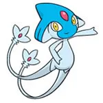

| Pokemon |
Nombre |
Tipo |
Habilidades |
Movimientos |
Informacion |
 |
Dialga |
Acero/Dragon |
Presion |
Dragoliento
Garra Metal
Cabeza de Hierro
Trueno
Cometa Draco
|
Dialga es el Pokémon que controla el tiempo y asegura su continuidad. |
 |
Palkia |
Agua/Dragon |
Presion |
Dragoliento
Hidrobomba
Garra Dragon
Acua Cola
Cometa Draco
|
Palkia tiene el poder de controlar el espacio a su merced y puede teletransportarse a través de este. Su ataque característico es
Corte Vacío, el cual le permite desgarrar el espacio. |
 |
Giratina |
Fantasma/Dragon |
Presion
Levitacion
|
Dragoliento
Garra Umbria
Sombra Vil
Viento Aciago
Poder Pasado
Golpe Umbrio
|
Las viejas leyendas dicen que Giratina vive en un universo paralelo, en unas ruinas o cementerio en lo profundo de la Cueva Retorno,
un lugar donde se dice que el límite entre las dimensiones está distorsionado. |
 |
Uxie |
Psiquico |
Levitacion |
Confusion
Premonicion
Paranormal
Trueno
Rapidez
|
Uxie es muy tímido e inteligente, sabe en quién confiar. Cuando te considera amigo te aporta sabiduría pero también te puede borrar la memoria si lo miras a los ojos. |
 |
Mesprit |
Psiquico |
Levitacion |
Confusion
Descanso
Proteccion
Deseo Cura
Rapidez
Paranormal
|
Mesprit iene un carácter juguetón, amable y muy activo y energético. No duda en proteger a sus hermanos y es muy fiero luchando. Es el Pokémon de las emociones, enseña a los humanos nobleza de pensar, sufrir y disfrutar. |
|  |
Azelf |
Psiquico |
Levitacion |
Confusion
Premonicion
Paranormal
Deteccion
Rapidez
Maquinacion
|
Azelf tiene un carácter juguetón y amable, pero es muy tímido. Es el ser de la voluntad. Duerme en una dimensión alterna en el fondo del lago para mantener el mundo en balance. |
 |
Regigigas |
Normal |
Inicio Lento |
Mega Puño
Pisoton
Fuerza
Puño Certero
Fuerza Bruta
Demolicion
Puño Incremento
|
Regigigas es considerado el líder de los otros tres regis (Regice, Regirock y Registeel). Se dice que puede arrastrar los continentes con su increíble fuerza. Se han encontrado manuscritos de miles de años de antigüedad que afirmaban que este Pokémon arrastraba continentes con cuerdas, y que al formar la Tierra tal y como la conocemos ahora cayó en un profundo sueño. |
 |
Heatran |
Fuego/Acero |
Absorbe Fuego |
Golpe Cabeza
Nitrocarga
Colmillo Igneo
Cabeza de Hierro
Lanzallamas
Estallido
|
Cuando Groudon creó la tierra, en el centro del planeta se guardaba materia a muy altas temperaturas. Se dice que esa materia dio origen a Heatran. Vive en lo más profundo de los volcanes y puede hacer que entren en erupción mientras que Entei puede controlar los desastres producidos por Heatran. |
 |
Cresselia |
Psíquico |
Levitacion |
Danza Lunar
Luz Lunar
Psicocorte
Psicocambio
Premonicion
Psíquico
|
Se dice que Cresselia es hembra, aunque no puede criar. Es de carácter cariñoso y bondadoso. Sus plumas lunares le sirven para aumentar su poder y se dice que es la representante viviente de la luna en la tierra. Cresselia puede curar a los humanos y Pokémon que caen enfermos por las pesadillas causadas por su contraparte, Darkrai. |
 |
Phione |
Agua |
Absorbe Agua |
Burbuja
Hidrochorro
Encanto
Armadura Acida
Buceo
Danza Lluvia
|
Es la cría de Manaphy aunque no puede evolucionar a este de ninguna manera. Phione puede expandir o encoger su cabeza a voluntad aparte de que es muy amistoso. Se alimenta del plancton. |
 |
Manaphy |
Agua |
Absorbe Agua |
Burbuja
Hidrochorro
Encanto
Armadura Acida
Rafaga
Cambia Almas
|
Manaphy es un Pokémon que nació en el mar. Tiene la apariencia de una pequeña hada. Normalmente nada hacia las profundidades del mar donde nació. Aparece muy raras veces en mares de aguas tibias y se dice que cura a los Pokémon de agua con sus místicos poderes. |
 |
Shaymin |
planta |
Cura Natural |
Hoja Magica
Síntesis
Beso Dulce
Deseo Cura
Fogonazo
Energibola
Aromaterapia
|
Shaymin es muy tímido ya que se oculta entre la hierba para no ser descubierto. Cuando cambia a su forma cielo, este ya se vuelve menos tímido y más valiente y protector. Vive en el Paraíso Floral, un campo de flores virgen. |
 |
Darkrai |
Siniestro |
Mal sueño |
Viento Aciago
Anulacion
Finta
Pesadilla
Brecha Negra
Come Sueños
|
Darkrai es el Pokémon de la oscuridad y del terror. Si este Pokémon aparece una noche de luna nueva, puede provocar pesadillas sin fin a su antojo y de las que nadie puede escapar hasta que Cresselia lo despierte, o hasta que se le entregue una Pluma Lunar. |
 |
Arceus |
Normal |
Multitipo |
Veloc. Exrema
Enfado
Vendetta
Hiperrallo
Onda Certera
Proteccion
|
Arceus es considerado como el Pokémon de la Creación, el cual creó su mundo Pokémon. Cuenta una leyenda que un huevo habitó en la nada y al eclosionar este, nació Arceus, considerado el Pokémon creador o Pokémon Alfa. |